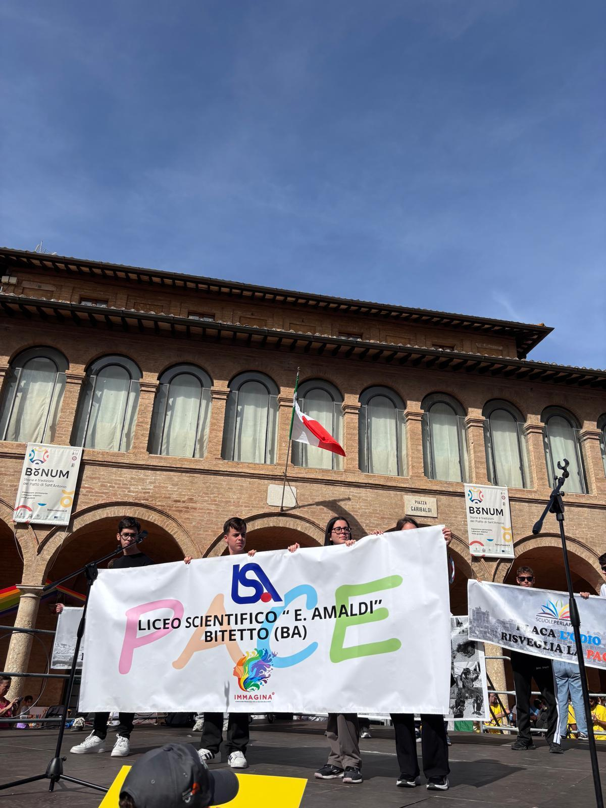
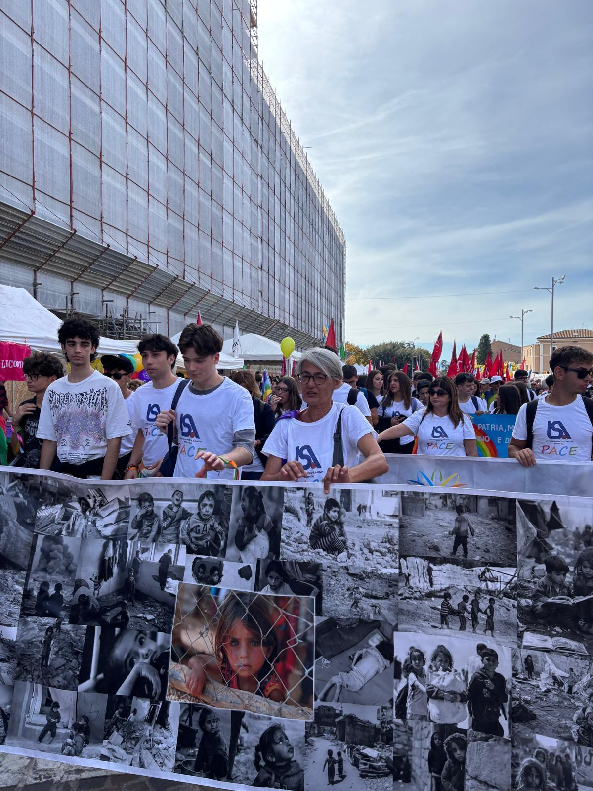

RISPETTO & ASCOLTO
I piccoli gesti quotidiani e l'attenzione verso l'altro come fondamenta di una società unita.
ASSISI • UNA RIFLESSIONE GIOVANE
La marcia della pace ad Assisi è stata per me un’esperienza davvero significativa. Partecipare a questo evento mi ha fatto capire quanto sia ancora importante parlare di pace, soprattutto in un periodo in cui nel mondo ci sono ancora tanti conflitti. Durante la giornata ho vissuto un’atmosfera intensa ma allo stesso tempo piena di speranza. Camminare insieme a così tante persone, tutte unite dallo stesso obiettivo, mi ha fatto sentire parte di qualcosa di più grande. Non è stata solo una semplice marcia, ma un momento vero di riflessione e condivisione.


Uno dei momenti più importanti è stato quando tre miei compagni hanno scritto, composto e ballato una canzone sulla pace. Ho trovato questa esibizione molto coinvolgente, perché attraverso la musica sono riusciti a trasmettere un messaggio forte e diretto. Vederli esibirsi mi ha fatto capire quanto anche noi giovani possiamo esprimerci in modo creativo e far arrivare le nostre idee.
“Ho capito che non bisogna per forza fare grandi azioni per contribuire al cambiamento, ma che anche il rispetto verso gli altri, l’ascolto e la capacità di dialogare sono forme concrete di pace.”
I piccoli gesti quotidiani e l'attenzione verso l'altro come fondamenta di una società unita.
La musica e l'arte dei ragazzi come canali potenti per far arrivare messaggi forti.
Un'esperienza oltre la scuola, per renderci cittadini più attenti e responsabili.
In conclusione, questa giornata mi ha lasciato qualcosa dentro che va oltre il momento stesso della marcia: mi ha fatto nascere la volontà di essere più attento agli altri e più responsabile nelle mie scelte quotidiane. Credo che esperienze come questa siano fondamentali perché aiutano noi giovani a crescere non solo dal punto di vista scolastico, ma anche umano, facendoci sentire parte attiva di un mondo che ha bisogno di più consapevolezza e solidarietà.